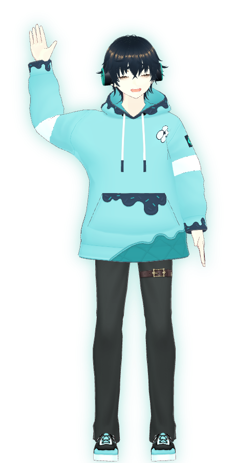

Голосовой помощник на твоём рабочем столе. Открываю программы и сайты, ставлю таймеры и будильники, управляю музыкой и звуком, рассказываю погоду, а сложные вопросы задаю нейросети.
Моё имя по-латыни значит «удачливый». Давай знакомиться — это минута.
И откуда ты — чтобы рассказывать погоду без лишних вопросов.
Я понимаю речь прямо на компьютере — запись никуда не уходит. Скажи «Феликс» и команду, или нажми Win + Y и говори без обращения.
Команды работают и без неё. Чтобы отвечать на любые вопросы, подключи свой аккаунт Claude или локальную модель. Можно сделать и потом, в настройках.